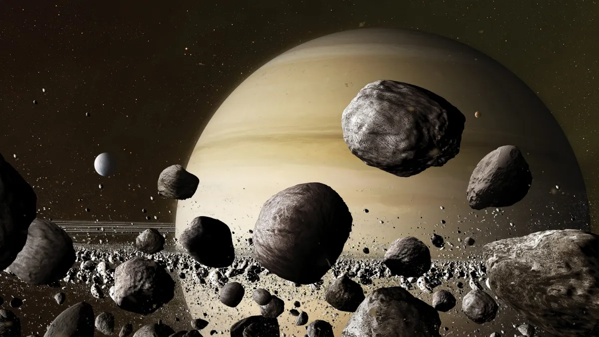

Saturn
Saturn is the sixth planet from the Sun and the second-largest planet in the Solar System after Jupiter. Saturn is classified as a gas giant planet. It is named after the Roman god of agriculture.

Mainly composed of hydrogen, with traces of helium and water, methane, ammonia, and heavy elements, Saturn has a relatively small core of iron, nickel, and ice, covered by a thin layer of metallic hydrogen and a gaseous outer layer. The outer atmosphere of the planet appears calm and uniform from space, although long-lasting formations sometimes appear. Wind speeds on Saturn can reach up to 1800 km/h in some places, significantly higher than Jupiter's. Saturn has a planetary magnetic field that occupies an intermediate position in intensity between the Earth's magnetic field and Jupiter's powerful field. Saturn's magnetic field extends to 1,000,000 kilometers in the direction of the Sun. A shock wave was recorded by Voyager 1 at a distance of 26.2 Saturn radii from the planet, and the magnetopause is located at a distance of 22.9 radii.
Saturn has a prominent ring system consisting mainly of ice particles, with a lesser amount of heavy elements and dust. The planet has 146 known satellites orbiting around it. Titan is the largest of them and the second-largest satellite in the Solar System (after Jupiter's satellite Ganymede), surpassing Mercury in size and possessing the only dense atmosphere among the satellites of the Solar System's planets, as well as methane seas and lakes.

Astronomical Characteristics
The average distance between Saturn and the Sun is 1,430 million km (9.58 AU). Moving at an average speed of 9.69 km/s, Saturn orbits the Sun in 10,759 days (approximately 29.5 years). The distance from Saturn to Earth varies from 1,195 (8.0 AU) to 1,660 (11.1 AU) million km, with an average distance during opposition of about 1,280 million km. Saturn and Jupiter are in almost exact resonance of 2:5. Since Saturn's orbit eccentricity is 0.056, the difference in distance from the Sun at perihelion and aphelion is 162 million km.

The duration of Saturn's rotation around its axis is taken as 10 hours, 34 minutes, and 13 seconds. Saturn is the only planet whose axial rotation speed at the equator exceeds its orbital rotational speed (9.87 km/s and 9.69 km/s, respectively).
Origin Theory
The origin of Saturn (as well as Jupiter) is explained by two main hypotheses. According to the "contraction" hypothesis, the similarity of Saturn's composition to the Sun, namely the large fraction of hydrogen in both celestial bodies and, as a result, low density, can be explained by the fact that during the formation of planets in the early stages of the Solar System's development, powerful "condensations" formed in the gas-dust disk, giving rise to planets, so the Sun and planets were formed in this way. However, this hypothesis cannot explain the differences in the compositions of Saturn and the Sun.

The "accretion" hypothesis suggests that the process of forming Saturn took place in two stages. Initially, for 200 million years, the process of forming solid dense bodies, similar to the terrestrial planets, took place. During this stage, a part of the gas dissipated from the region of Jupiter and Saturn, which then influenced the difference in the chemical composition of Saturn and the Sun. Then the second stage began when the largest bodies reached twice the mass of the Earth. Over several hundred thousand years, the process of gas accretion onto these bodies from the primary protoplanetary cloud continued. At the second stage, the temperature of Saturn's outer layers reached 2000°C.
Exploration of Saturn
Initially perceived as three separate objects through Galileo's telescope in the early 17th century, Saturn was later revealed as a planet with rings thanks to the observations of Christiaan Huygens in 1659. In subsequent years, scientists discovered many satellites of this giant gas planet. Among them, the largest Titan was discovered by Huygens. Cassini also made his contribution to the study of Saturn and its surroundings.

Space missions such as "Pioneer 11", "Voyager 1" and "Voyager 2", and later "Cassini-Huygens", provided valuable data about the planet, its rings, and satellites. Research allowed us to learn about the structure of the ring system, Saturn's atmosphere, and magnetosphere, as well as describe the surface of its satellites. Significant discoveries included hydrocarbon lakes on Titan and geysers on Enceladus. Such research has provided scientists with a unique perspective on understanding this fascinating planet and its system.
Saturn's Rings
Today it is known that all four gas giants have rings, but Saturn's are the most prominent. The rings are tilted at an angle of approximately 28° to the plane of the ecliptic. Therefore, depending on the mutual positions of the planets, they look different from Earth, and their so-called "opening" changes—from maximum, when their entire width in the plane is visible, to minimum, a very thin strip when this plane is seen "edge-on". As Huygens suggested, the rings are not a solid body but consist of billions of tiny particles located in a circumplanetary orbit. This was proven by spectroscopic observations by A.A. Belopolsky at the Pulkovo Observatory and two other scientists in 1895—1896.
There are three main rings and a fourth, thinner one. Together, they reflect more light than Saturn's disk. The three main rings are conventionally labeled with the first letters of the Latin alphabet. Ring B—the central, widest, and brightest—separates from the outer ring A by the Cassini Division, nearly 4000 km wide, which contains the thinnest, nearly transparent rings. Inside Ring A, there is a thin gap called the Encke Division. Ring C, located closer to the planet than B, is almost transparent.
Saturn's rings are very thin. With a diameter of about 250,000 km, their thickness does not exceed a kilometer (although there are mountainous formations on the ring surface). Despite their considerable appearance, the amount of matter making up the rings is extremely small. If it were collected into a monolith, its diameter would not exceed 100 km. Images obtained from probes show that in reality, the rings are composed of thousands of ringlets alternating with gaps; the pattern resembles grooves on vinyl records. The particles making up the rings range in size from 1 cm to 10 meters. By composition, they consist of 93% ice with minor impurities (which may include copolymers formed under the action of solar radiation, and silicates) and 7% carbon.